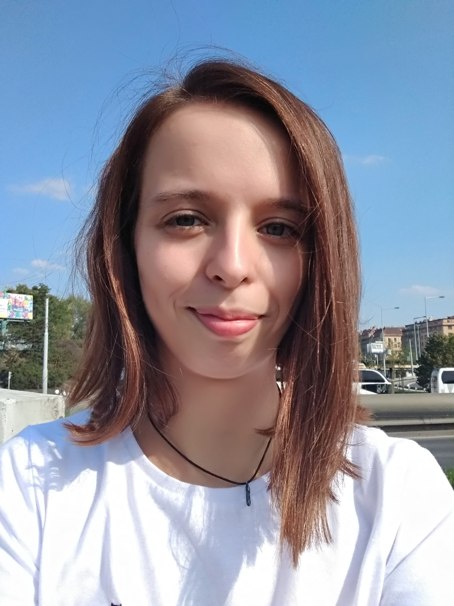
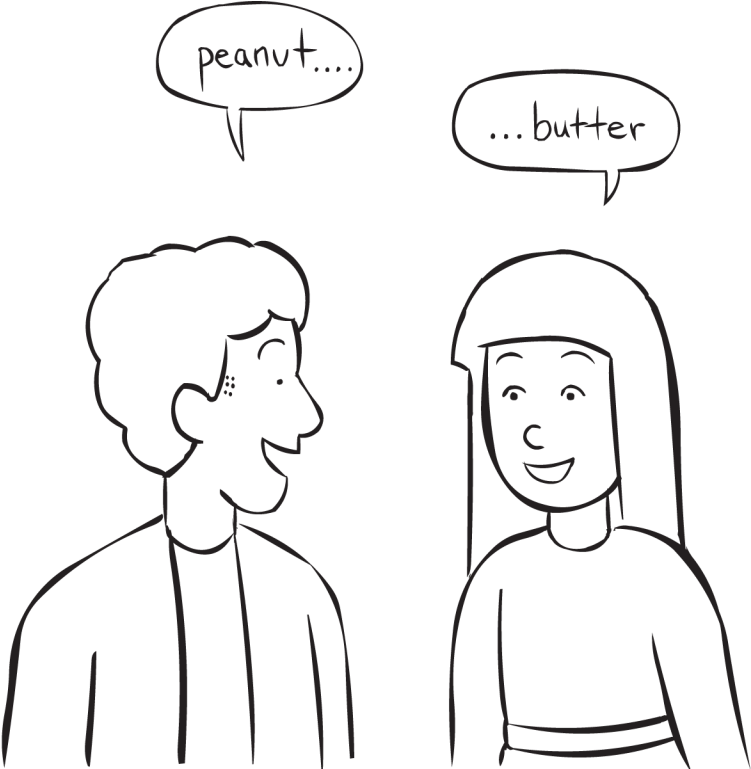

Šárka Boháčová
Soukromé lekce angličtiny
Kdo jsem

Jmenuji se Šárka Boháčová a jsem lektorkou angličtiny. Mám za sebou již 11 let zkušeností a desítky spokojených studentů a studentek. Bydlím v Plzni, kde je možné se se mnou pravidelně scházet osobně, nebo lekce poskytuji online.
Anglicky jsem se naučila zejména díky četným pobytům v zahraničí (nejčastěji Irsko) a díky studiu na vysoké škole, obor Anglistika-amerikanistika. Má angličtina je na úrovni C2.
Pracovní zkušenosti
- Jako soukromá lektorka pracuji od roku 2011 do současnosti. Učím zejména děti a dospívající, ale i dospělé.
- Před nástupem na rodičovskou dovolenou jsem pracovala v Dětské skupině Božkov jako pedagožka dětí předškolního věku.
- Pracovala jsem také jako sociální pracovnice s neslyšícími. Ovládám český znakový jazyk.
Vzdělání
- Mám magisterský titul v oboru Environmentální studia z Fakulty sociálních studií MU Brno.
- Bakalářský titul jsem získala ukončením oboru Čeština v komunikaci neslyšících na Filosofické fakultě UK Praha.
- Studovala jsem také obor Anglistika-amerikanistika na FF UK v Praze. Studium jsem nedokončila, avšak získala jsem zde vědomosti, které denně uplatňuji ve své práci.
Kurzy
- Kurz globální výchovy a vzdělávání, NaZemi z.s.
- Kurz zájmové a mimoškolní pedagogiky, NIDV institut
- Kurz efektivní komunikace
Výuka

Zaměřuji se především na výuku dětí a dospívajících, avšak mám zkušenosti i s výukou dospělých. Angličtinu vyučuji od úplných začátečníků po pokročilé na úrovni C2. Lekce poskytuji výhradně soukromé, a to osobně v Plzni nebo online, ať už bydlíte kdekoliv.
Ceník mých služeb
| Typ lekce |
Cena |
| Online 45 min |
300 Kč |
| Online 60 min |
350 Kč |
| Osobně 45 min |
350 Kč |
| Osobně 60 min |
400 Kč |
Reference
- "Šárka mě učí angličtinu již pátým rokem. S výukou jsem velmi spokojená. Šárka je spolehlivá, její znalosti jsou na vysoké úrovni a hodiny jsou zábavné. Díky Šárce mám ve škole z angličtiny dobré známky."
Barbora, 17 let
- "Šárka učila v naší PPP několik let. Docházely k ní děti s dysgrafií a dyslexií, pro které byla angličtina opravdu oříšek. Šárka je neuvěřitelně trpělivá a laskavá, děti k ní chodily velmi rády. Šárčiny lekce mohu jedině doporučit."
Gabriela Dvořáková, Ředitelka PPP Pampeliška